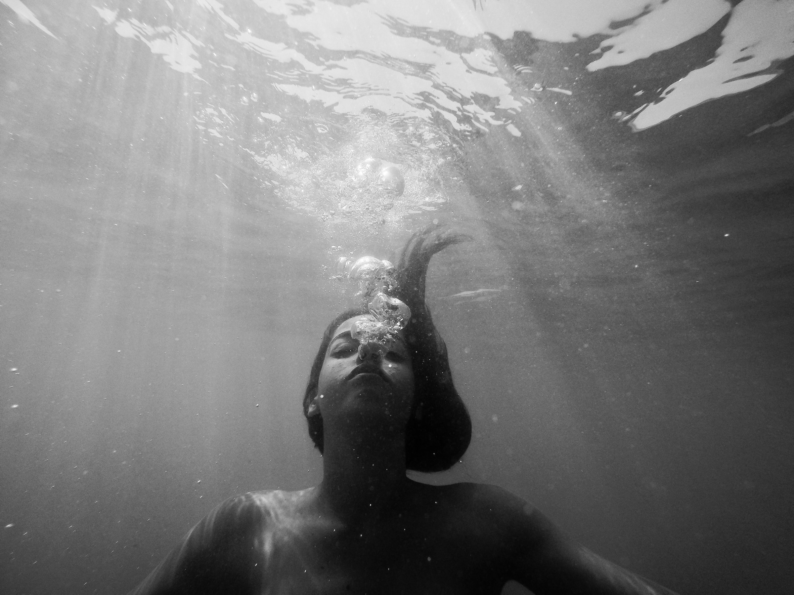

Surfing for Serenity: The Mental Health Benefits of Riding the Waves
Published on:
Surfing is not just a thrilling watersport; it's also a powerful remedy for the mind. Beyond the sun-kissed waves and salty breeze lies a holistic experience that nurtures our mental well-being. Whether you're a seasoned surfer or just starting to ride the waves, there are numerous reasons why surfing is exceptionally good for your mental health.
The Rhythmic Nature of the Ocean:
When you paddle out into the vast expanse of the ocean, you're welcomed by a symphony of waves. The rhythmic motion of the ocean acts as a natural meditation, lulling you into a state of tranquility. The repetition of paddling and catching waves brings a sense of focus, helping to clear the mind of daily stresses and worries.
Mindfulness and Presence:
Surfing demands your complete presence. As you ride a wave, you must be fully engaged with the present moment, aware of the shifting water beneath you and the current around you. This mindfulness practice allows you to let go of distractions, bringing a sense of clarity and calm to your thoughts.
Connection with Nature: Being immersed in nature has profound benefits for mental health. Surfing provides an intimate connection with the natural world as you become one with the sea. The sight of majestic waves, the sound of crashing surf, and the feel of saltwater on your skin create a sensory experience that promotes relaxation and rejuvenation. Release of Endorphins: Physical exercise, such as paddling and balancing on a surfboard, triggers the release of endorphins, the body's natural mood enhancers. These "feel-good" chemicals can lift your spirits and leave you with a sense of euphoria after a satisfying surf session. Overcoming Challenges: Surfing is not without its challenges, and successfully catching a wave can be a triumphant achievement. Overcoming obstacles and mastering new skills instill a sense of accomplishment and boost self-confidence, positively impacting your mental resilience. Social Connection: Surfing often brings people together, creating a sense of community among surfers. Whether it's chatting with fellow surfers in the lineup or sharing stories on the beach, these social interactions foster a sense of belonging and support, which is essential for mental well-being. Stress Reduction: The combination of physical activity, connection with nature, and mindful focus can significantly reduce stress and anxiety levels. Surfing serves as a temporary escape from the hustle and bustle of daily life, offering a chance to reset and recharge. In conclusion, surfing is more than just a sport—it's a form of therapy for the mind. The harmonious dance with the ocean, the meditative rhythm of paddling, and the joy of catching a wave all contribute to a profound sense of well-being. So, grab your surfboard, head to the beach, and let the healing power of the waves wash over you, one surf at a time.